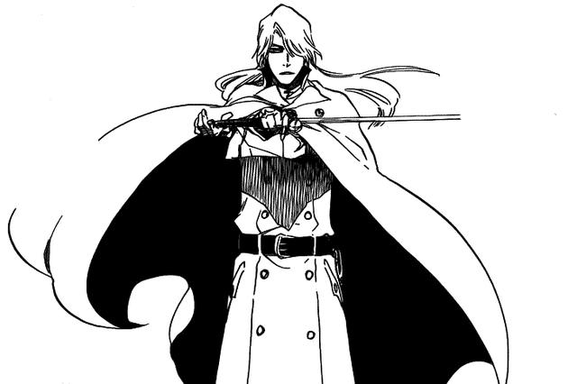
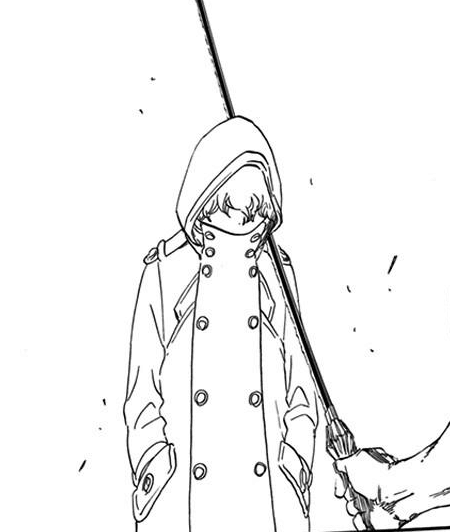

无形帝国
灭却师的国家

友哈巴赫
灵王之子，灭却师的祖先

雨葛兰·哈斯沃德
无形帝国皇帝辅佐

葛雷密·托缪
以星十字骑士团最强者自居
国王是千年前曾经和死神大战的友哈巴赫，主要战斗力是以星十字骑士团的二十五人为中心的灭却师集团
吾等前方，绝无敌手
译名：漂灵（香港），境·界（大陆）
世界观
不论何种灵界的灵体、生物、物品皆具备灵魂，通常灵体和生物在灵界死亡的时候，遗体就会自行分解成为灵子，化作组成灵界物质的一部分
现世
即黑崎一护、井上织姬、茶渡泰虎、石田雨龙等主角，即人类所居住的地方。现世中的故事主要围绕空座町发生（在代理死神消失篇，则延伸至邻近的鸣木市）。空座町实为重灵地。
尸魂界
死神和魂魄所居住的世界，包括位于中央的贵族和死神所居住的瀞灵廷，以及环绕瀞灵廷的其他魂魄所居住的流魂街两部分，类似于天堂或极乐世界。
虚圈
处于现世与尸魂界之间的地带。原居民全部为虚，地面主要为一望无际的沙漠，沙丘中竖立着石英造成的树干。大气中灵子浓度非常高，沙丘中的小动物虚得以靠吸收灵子生存。
主要角色
登场的角色来自不同的世界，可分作不同的生命体
黑崎一护
主角，代理死神
井上织姬
黑崎一护的同班同学
石田雨龙
灭却师幸存后代
朽木露琪亚
十三番队队长
浦原喜助
原十二番队队长，技术开发局局长
四枫院夜一
原二番队队长，隐秘机动总指挥官
京乐春水
原八番队队长，现一番队总队长
更木剑八
十一番队队长
剧场版
至今已有四部作品
2006-12-16
无人的回忆
出现在一护露琪亚面前的谜之少女,自己失去了记忆,手持斩魄刀“弥勒丸”，随即在不知不觉间与一护建立了信任及感情。原来茜雫的本体为全部记忆的集合体-思念珠。在通过断界之门时失去了记忆, 却又不明地取得了死神的力量出现在现世。作为反派出现的严龙则希望利用她报复世界。大战一触即发。最终她决定牺牲自己来保护世界遭到破坏，即使自己从所有人记忆中消失也再不会后悔...
2007-12-22
钻石星尘的反叛!另一个冰轮丸
在负责押送尸魂界王族秘宝“王印”的途中，一股神秘力量突然袭来，十番队虽奋力反击，却终究丢掉秘宝，日番谷冬狮郎也在阵前莫名逃亡。黑崎一护从二番队队长碎蜂口中得知始末，袭击护送队伍且与日番谷交手的是一个早已死掉的死神草冠。这两个人曾是莫逆之交，他们的关系也让袭击事件扑朔迷离，草冠的背后有隐藏着怎样的势力和秘密？
2008-12-13
呼唤君之名
实验室里工作的涅被像镰刀一样的东西袭击，身体产生了异变。涅突然像疯了似的，没有缘由地乱敲试验装置的操作盘。一瞬间瀞灵廷被灵子云所覆盖，死神们都准备去联络涅。 当剑八冲进涅的实验室时，发生了巨大的灵子爆炸。露琪亚惊愕地在远处发现了瀞灵廷被破坏，在她面前出现了某个影子。那个影子向露琪亚斩下镰刀，露琪亚的身体之中像是有什麼东西消失了...
2010-12-4
死神地狱篇
地狱--是生前犯下重罪的人被遣送的地方，也是死神们被禁止进入的地方，那里囚禁着凶恶的咎人发起一场叛变，并攻击一护等人所居住的空座町 。在拥有强大力量的咎人的面前，一护等人无法抵挡一个叫黒刀的神秘男子出来搭救一护为了保护空座町，与露琪亚、雨龙和恋次一起前往禁忌之地的地狱一护等人与咎人的决斗开始！
无形帝国
灭却师的国家
友哈巴赫
灵王之子，灭却师的祖先
雨葛兰·哈斯沃德
无形帝国皇帝辅佐
葛雷密·托缪
以星十字骑士团最强者自居
国王是千年前曾经和死神大战的友哈巴赫，主要战斗力是以星十字骑士团的二十五人为中心的灭却师集团
联系我们
如果你需要的话